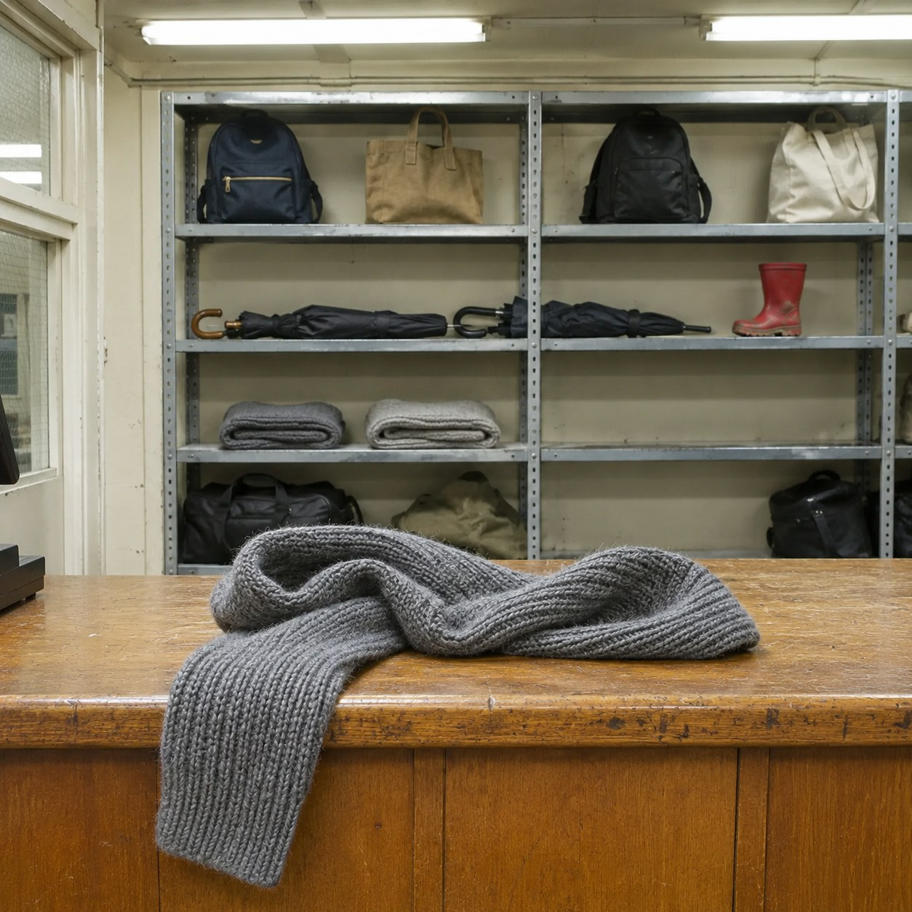
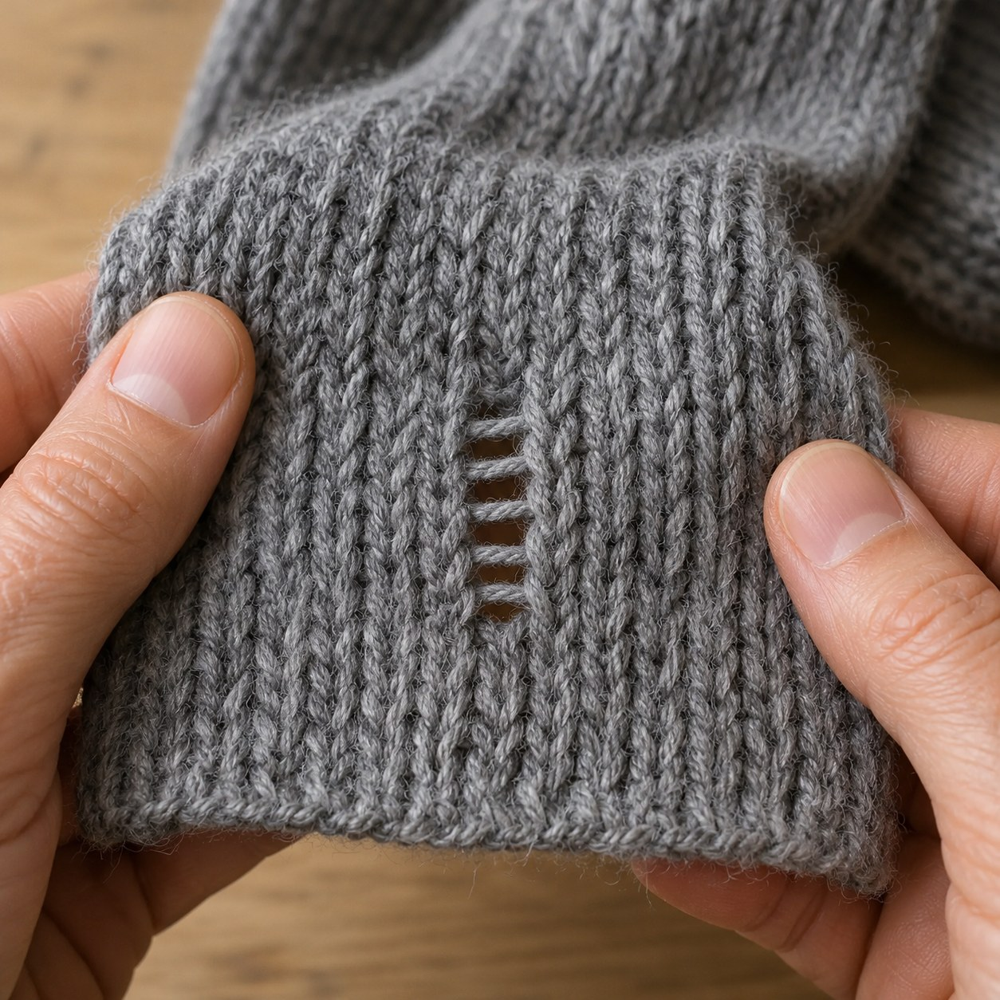

Can You Describe It


"Can you describe it?"
That is the only question the lost property office asks. No receipt, no proof of purchase, no name sewn into a collar. You get a thing back by saying what it is, well enough that the person behind the counter believes you.
The scarf was grey and long, knitted by me over one winter. Near one end there is a dropped stitch, a small ladder running down five rows, which I saw too late and decided to keep. I left it folded on the seat of a morning train and got off. Someone I will never meet carried it to the office at the end of the line.
In the late seventeenth century John Locke wrote that a thing becomes yours when you mix your labour with it. By that rule this scarf is more mine than almost anything I own. I made every one of its stitches. I could have told the man at the counter how many there were.
He did not want my labour. He wanted words: colour, length, which train. Then, because there were three grey scarves on the shelf behind him, one detail more. I told him about the ladder. He went to the shelf, turned the ends over until he found it, and handed the scarf across.
At the counter, owning is a kind of knowing. A thing goes home with whoever can say it best. And most of what we own we could not describe at all: the pattern round a mug, the colour inside a coat, the teeth of our own front door key. We keep those things by habit, not by knowledge, and the office would keep them from us.
I carried home the same scarf. But I hold it now in a new way, not because I made it and not because I paid for it, but because a stranger asked me what it was, and I knew.